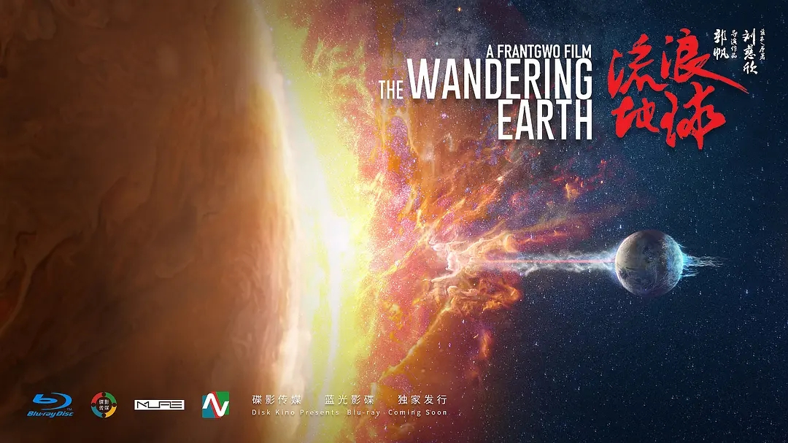

流浪地球

概况
导演: 郭帆
编剧: 龚格尔 / 严东旭 / 郭帆
主演: 泰吴京 / 屈楚萧 / 赵今麦 / 李光洁 / 吴孟达 / 更多...
类型: 科幻 / 冒险 / 灾难
制片国家/地区: 中国
语言: 中文
上映日期: 2019-02-05(中国大陆)
片长: 125分钟
剧情简介
近年来，科学家们发现太阳急速衰老膨胀，短时间内包括地球在内的整个太阳系都将被太阳所吞没。
为了自救，人类提出一个名为“流浪地球”的大胆计划，即倾全球之力在地球表面建造上万座发动机和转向发动机，
人推动地球离开太阳系，用2500年的时间奔往新家园。中国航天员刘培强（吴京 饰）在儿子刘启四岁那年前往领航员空间站，
和国际同侪肩负起领航者的重任。转眼刘启（屈楚萧 饰）长大，他带着妹妹韩朵朵（赵今麦 饰）偷偷跑到地表，
偷开外公韩子昂（吴孟达 饰）的运输车，结果不仅遭到逮捕，还遭遇了全球发动机停摆的事件。
为了修好发动机，阻止地球坠入木星，全球开始展开饱和式营救，连刘启他们的车也被强征加入。
在与时间赛跑的过程中，无数的人前仆后继，奋不顾身，只为延续百代子孙生存的希望。